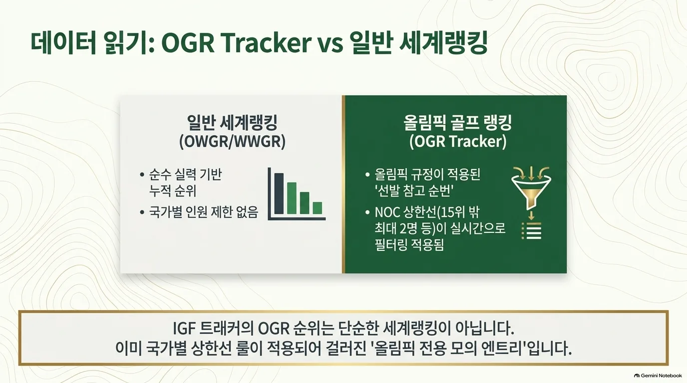
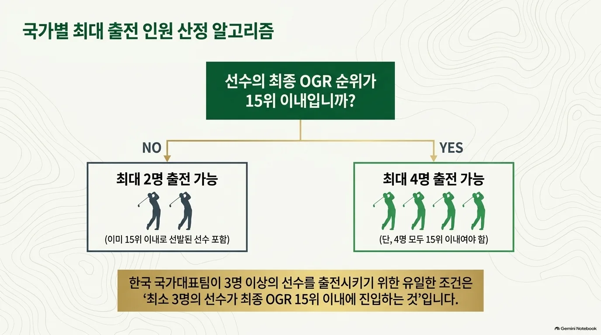

공식 랭킹 확인
매주 월요일 전주 대회 결과를 반영해 계산하고 화요일 IGF에 게시한다. 표의 Olympic Rank와 OWGR Rank / Rolex Rank는 구분해서 읽어야 한다. 국가별 제한을 반영한 참가 순번을 세계랭킹 15위 기준과 혼동하지 않는다.
OWGR·WWGR과의 관계
남자는 OWGR이 인정하는 투어의 공인 랭킹 대회, 여자는 WWGR이 인정하는 투어의 공인 랭킹 대회를 반영한다. OGR 선발에는 세계랭킹뿐 아니라 국가별 상한과 개최국·대륙 대표 보장이 적용된다.
규정 D는 2년간의 성적과 평균 포인트를 사용한다. 최근 13주 포인트를 전액 반영하고 그 이후 91주 동안 감액한다. 규정상 최소 나눗수는 여자 35개 대회, 남자 40개 대회이며 남자 최대 나눗수는 52개다.
| 구분 | 남자 | 여자 |
|---|---|---|
| 세계랭킹 | OWGR | WWGR / Rolex Rankings |
| 예선 기간 | 2026.06.22–2028.06.19 | 2026.06.08–2028.06.05 |
| 최종 발표 | 2028.06.20 | 2028.06.06 |


출전 인원에 적용하는 방법
- 최종 OGR 15위 이내 적격 선수를 국가별 최대 4명까지 선발한다.
- 16위 이하는 15위 이내 선수를 포함해 국가별 최대 2명까지 선발한다.
- 대륙 대표 보장과 개최국 쿼터·재배정을 적용하여 남녀 각 60명을 구성한다.
60명 출전 자리를 두고 동률이면 규정 D에 따라 최근 52주, 이어 최근 13주 획득 포인트를 순서대로 비교한다.


공식 근거
- IGF · LA28 Qualification System (PDF, 문서 표기 2026.01.31) — B~G
- IGF · 남자 공식 Olympic Golf Ranking
- IGF · 여자 공식 Olympic Golf Ranking
- IGF 홈페이지가 연결하는 Qualification Insights
- IGF · 예선 개시 및 OMTR 공식 설명 (2026.06.09)
- OWGR · 남자 세계랭킹
- Rolex Rankings · 여자 세계랭킹
- LPGA · 여자 세계랭킹 주간 아카이브
규정 확인일: 2026.10.01. IGF 공식 OGR 페이지가 직접 연결하는 PDF를 기준으로 정리했다. 기존 골프 페이지의 2026.05.12 표기는 해당 PDF에서 확인되지 않아 사용하지 않았다. 본 문서는 비공식 한국어 요약이며 최종 적용은 IGF 공지를 따른다.
한국 출전 전망
현재 랭킹을 LA28 규정에 단순 적용한 참고치이며 2028 확정 전망이 아님.
남자 약 2명 · 여자 3~4명 가능 범위
남자는 국가별 일반 상한 2명을 중심으로 본다. 여자 세계랭킹의 현재 수치만 적용하면 4명이며, 네 번째 선수가 15위 경계에 있어 3~4명 범위로 설명한다. 이는 통계적 예측 구간이나 최소 인원 보장이 아니다.
| 선수 | 공개 순위 | 근거 |
|---|---|---|
| 김시우 | OGR 9위 / OWGR 14위 | IGF · 2026.09.28 |
| 김주형 | OGR 17위 / OWGR 32위 | IGF · 2026.09.28 |
| 유해란 | OGR 3위 / WWGR 3위 | IGF · 2026.09.28 |
| 김효주 | OGR 4위 / WWGR 4위 | IGF · 2026.09.28 |
| 김세영 | OGR 9위 / WWGR 9위 | IGF · 2026.09.28 |
| 김민솔 | OGR 15위 / WWGR 15위 | IGF · 2026.09.28 |
남자: IGF가 연결하는 공식 랭킹 트래커의 2026.09.28 남자 60명 명단에는 김시우(9위)·김주형(17위), 한국 선수 2명이 표시된다. 김시우의 15위 이내 진입만으로 한국의 상한이 자동으로 4명이 되지는 않는다. 세 번째·네 번째 선수가 추가되려면 각각 15위 이내 조건이 필요하므로 약 2명을 참고 범위로 둔다. 트래커의 OGR 순번과 OWGR 세계순위는 서로 다르며, 이 명단은 2028년 확정 대표 명단이 아니다.
여자: 9월 28일 WWGR 및 IGF 여자 트래커에는 한국 선수 4명이 15위 이내에 있다. 현재 수치의 단순 적용 결과는 4명이다. 네 번째 선수의 순위가 16위 이하로 바뀌고 나머지 3명이 15위 안에 남는 경우에는 3명이 된다.
혼성: 남녀 개인전 출전자를 모두 확보하고 OMTR 선발 요건을 충족해야 1팀을 구성할 수 있다. 개인전 참가 가능 인원을 혼성 출전 확정으로 해석하지 않는다.
자료 기준: 2026.09.30 이전 최신 주간 자료인 2026.09.28 IGF 남녀 트래커와 WWGR 여자 주간표를 사용했다. OGR은 현재 선발 참고 순번, OWGR/WWGR은 세계순위로 구분했다. 현재 명단을 2028년 최종 선발 결과로 해석하지 않는다. 2028년 최종 랭킹·참가 자격·쿼터 수락에 따라 달라질 수 있다.